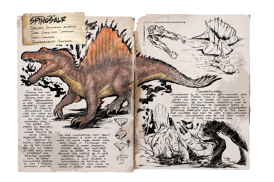
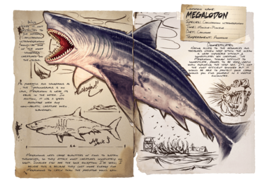
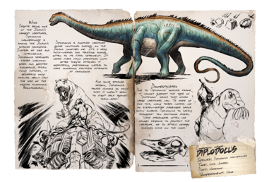

Ark Survival Evolved: To-Tame List

- Territorial
- Level: 30
- Knock Out: 13 Raw Prime Fish Meat
- Crossbow: 15 Tranq Arrow
Taming

- Aggressive
- Level: 50
- Knock Out: 12 Raw Prime Meat
- Crossbow: 21 Tranq Arrows
Taming

- Naive
- Level: 30
- Passive: 53 Mejoberries
- Knock Out: 157 Mejoberries
- Crossbow: 53 Tranq Arrows
Taming